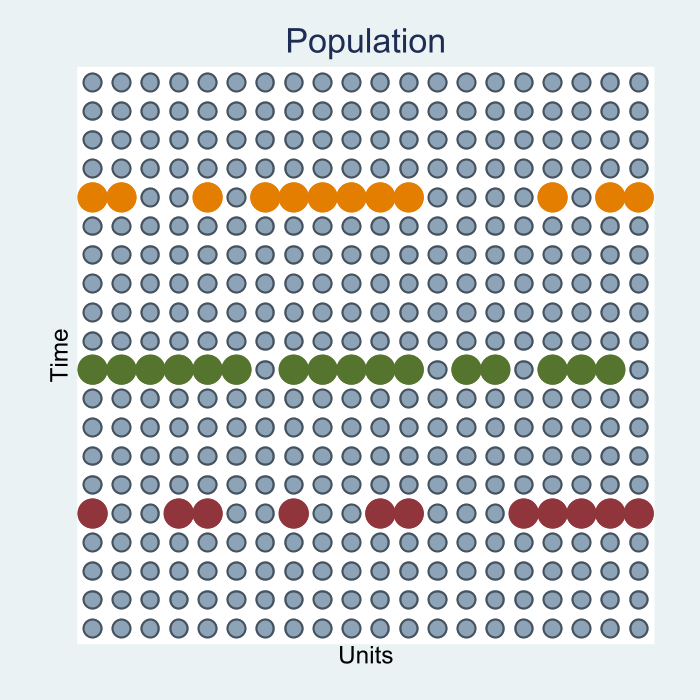

Introduction
Why Econometrics?!
What is econometrics?
Econometrics is an amalgamation of Statistics and Economics, that typically analysis nonexperimental data.
Statistics: Because we make use of numerous properties and mathematical properties to obtain derive Statitics related to our data
Economics: Because we aknowledge that we use data that comes from Agents interactions, and as such as subject to erros.
We use both tools to analyze data from the world around us.
- Your Economic intuition to make sense and explain relationships that you find, and mathematics/statistics to obtain estimates that are statistically sound.
When is it useful?
Econometrics is useful whenever we aim to:
- Test theories, Explore theoretical relationships, Verify Predictions
But also
- We use Econometrics when we want to evaluate policies, or provide evidence for policy makers. Find that Causal effect.
- Caveat: We may not have the best data for this, but we can come up with cleaver designs to still do our job!
Where does Econometric Fits in Empirical Research
Obvious answer
- You will need Econometrics methods to analyze your data, however, (just as a reminder) you should be aware of “HOW” an Empirical Research should be made:
S1. Research Question:
- A question that is Answerable (within bounderies of Time/Money/and availabilty)
- That should help us understand a Topic Better
- That is Specific Enough to be feasible, but General Enough to be of interest.
- Keep it simple
Where does Econometric Fits in Empirical Research
S2. Construct an Economic model
- To understand what the problem before you start analyzing the research question. May not need a formal modeling (Heavy Math), but enough to have some understanding of the problem.
S3. Decide on the Econometric model
- You need to decide what data is needed and is available your model.
- How you will estimate the model (assumptions on methods)
S4. Estimate model, and Analyze Data
- Estimate the model, using Economtric tools and Methods fitted to the data and the research question.
- Explain results in light of your Economic Model, and theoretical predictions. The Economist in you!
So you need Data
Need for Data
Different types of data may allow for using different econometric methodologies, and answer different types of questions.
Keep in mind you will only have access to SAMPLES, never the Population
There will be instances that you come close to Population data, ie Census.
But Even Census data is not the Population (or Super Population we use in Econometrics).
Types of Data:
Cross-Section: Sample of the population collects data on Many individuals in a single point in time.
Time Series Data: Data collected on a single individual across time.
Panel Data: Data collected for Many individuals who are followed across time.
Repeated Cross-Section: Pooled Cross-Section Data for different individuals collected at different points in time. Individuals are not followed across time.
Visually



Before the Break:
Causality, Ceteris Paribus, and Counterfactuals
Thee important concepts for the Class
Causality: This is what most applied research aims to identify. A causal effect is a change the variable interest experiences, only because a second variable changed, while all other factors remained FIXED.
- This is different from associations or correlations.
Ceteris Paribus: In Econometric analysis, ceteris paribus implies that all factors, except the one analyzed, are assumed constant (There is no change), thus leading to causality
Counterfactual: It is the consideration of what would have been if only a single factor changed in the analysis (for a given observation).
- What if didn’t apply to the MSC at Levy? If you got miss your plane to the US? etc.
Thinking about Counterfactuals is Key
For empirical work that aims to identify Causal Effects, it is important to understand the concept of counterfactual.
- It will help you understand what is what you need to analyze,
- How could those effects be identified in ideal scenarios (Experiments)
- What the limitation of those scenarios are
- And what alternatives are there to void those limitations
Example: Causal effect of Fertilizer on Crops
RQ: By how much will the production of soybeans increase if one increases the amount of fertilizer applied to the ground?
CF: Same Piece of Land with and without Fertilizer (Impossible)
EXP: Randomly Use Fertilizers Across different Plots of Land (Expensive but feasible)
EA: Use Regressions to keep other all factors that can affect Land productivity fixed when Analyzing Expost Data (Inexpensive)
Example: Causal Effect of Smoking on Babie’s health
RQ: Does Smoking during Pregnancy decreases birthweight?
CF: We consider the same woman. In one case she smokes through pregnancy, in the other she doesnt. Compare Babies Weight.
EXP: Select a random sample of Pregnant Women and randomly select those who will be “forced” to smoke during pregnancy.
EXP1: Select a Randome sample of PW with history of smoking. Randomly offer them a voucher and Counceling to quit smoking.
EA: Consider women with similar characteristics, except for smoking, and compare their babies outcomes.
Homework 0
Read Chapter 2 of -The Effect- by Nick Hungtington-Klein. here
In groups of X:
- Come up with a Research question,
- Identify your main dependent variable, and the variable you want to analyze the causal effect.
- Describe relevant factors that may need to be considered for the analysis (Economic model).
- Describe how those factors may relate to the outcome, and your variable of interest.
- Describe an ideal Experiment you may run to identify the effect. Is it a feasible experiment?
- Is there any data you could use to answer this question?